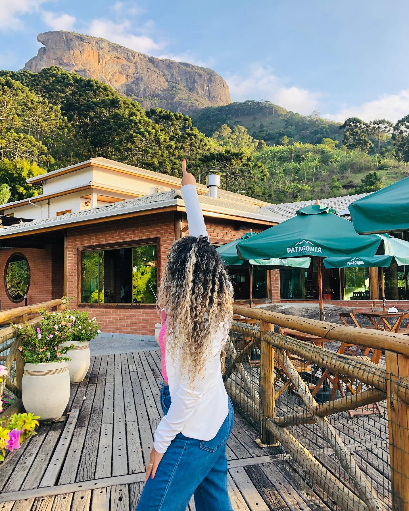
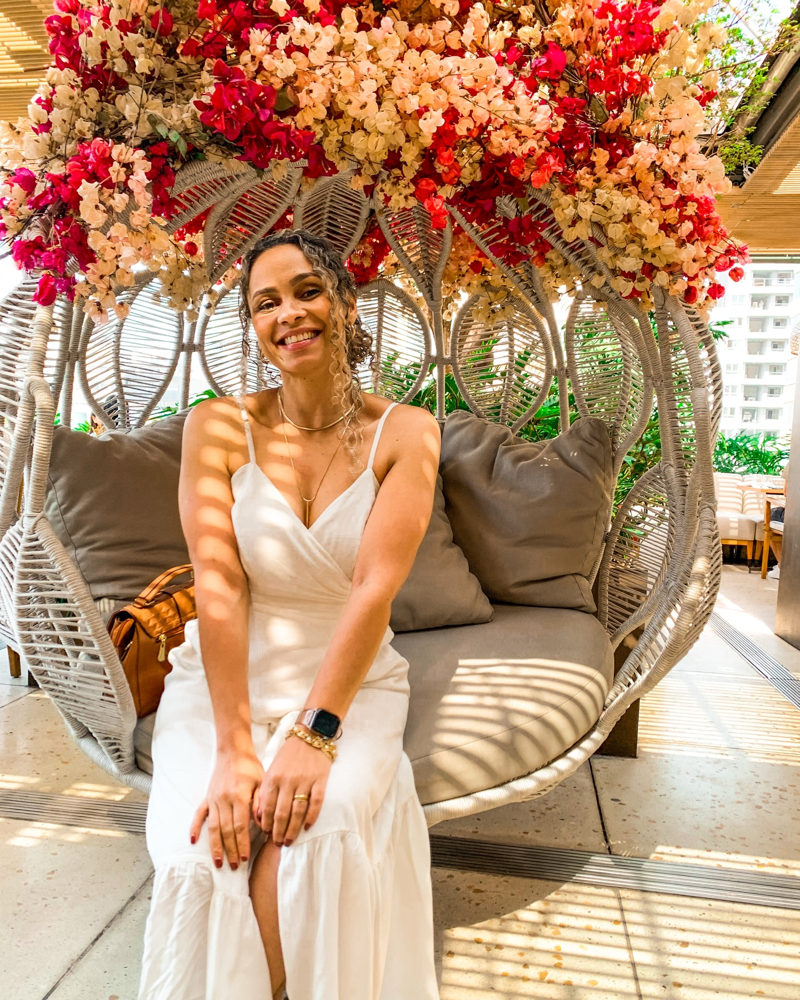
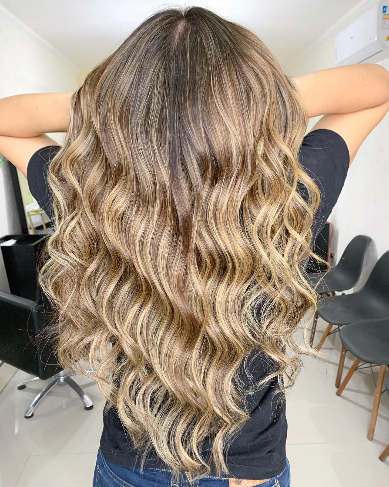
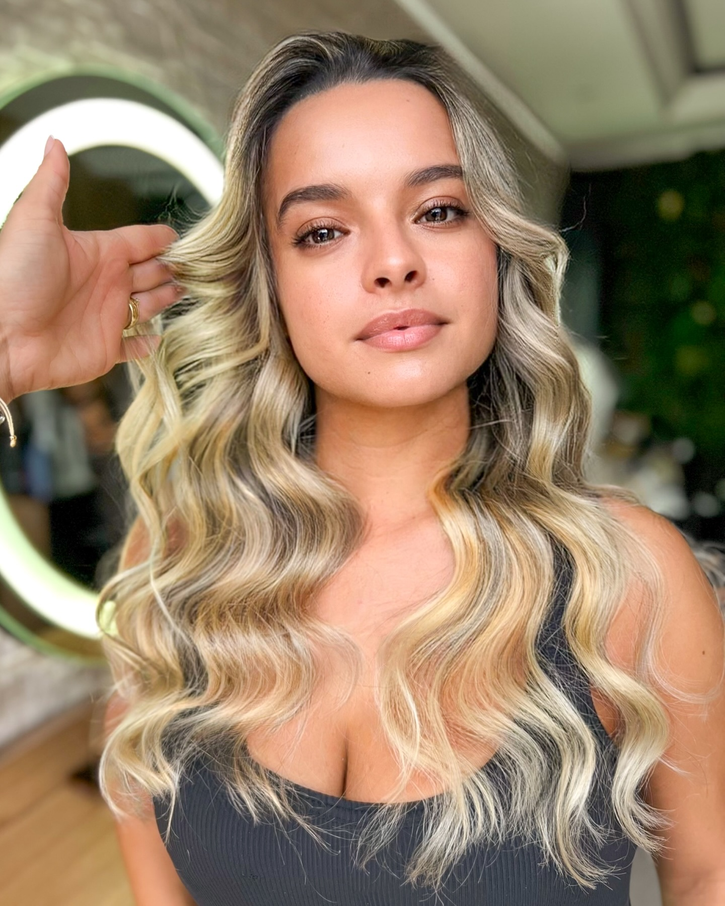
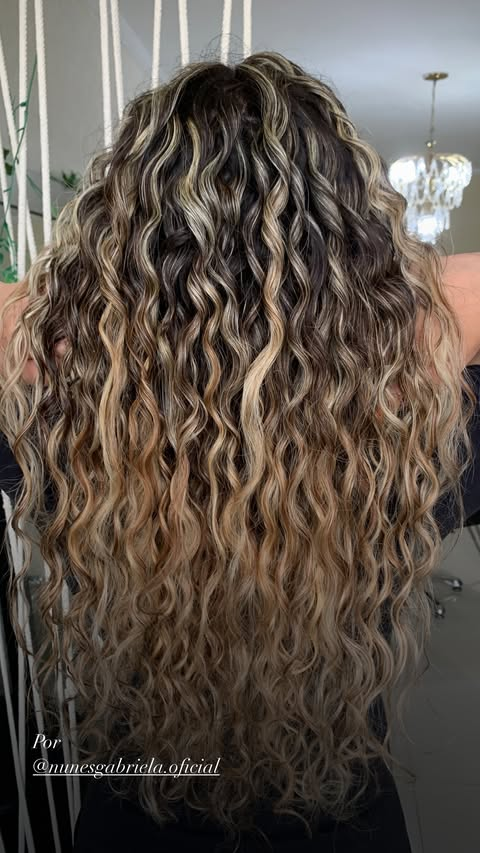

Escuta
Uma consulta cuidadosa para traduzir desejo em direção.
Especialista em loiros iluminados · São Paulo
Cor que respeita a sua beleza, técnica que preserva a saúde dos fios e um atendimento que começa pela escuta.
Descubra o trabalho ↓
SUN-KISSED · BLONDE SPECIALIST · SP
Beleza que cria conexão
Cada cabelo conta uma história. Por isso, antes da técnica, vem a conversa: entender sua rotina, sua textura e como você deseja se sentir.
Sou Bia Ribeiro, especialista em loiros iluminados e cachos. Uno estudo, sensibilidade e cuidado para criar resultados luminosos, possíveis e verdadeiramente seus.

Minha filosofia
“O loiro mais bonito é aquele que ilumina você — não aquele que apaga quem você é.”
Uma consulta cuidadosa para traduzir desejo em direção.
Estratégia de cor pensada para cada base, textura e rotina.
Fios saudáveis são parte do resultado — nunca um detalhe.
Menu de experiências
Do primeiro raio de luz ao cuidado que mantém o brilho vivo.
Mechas personalizadas com transição suave, dimensão e acabamento natural.
Cor desenhada para valorizar o movimento sem perder a identidade da curvatura.
Protocolos de reconstrução, nutrição e brilho de acordo com a necessidade dos fios.
Renovação da nuance e do brilho para prolongar a beleza do seu loiro.
Saúde antes da beleza
Um cuidado que começa na raiz. A partir de uma avaliação individual, Bia combina técnicas e protocolos direcionados às necessidades do couro cabeludo e dos fios.
Oleosidade · Caspa · Dermatite seborreica · Foliculite · Queda capilar
Avaliação, massagem, esfoliação e protocolos personalizados para cada necessidade.
Luz em movimento



Imagens editoriais ilustrativas. Acompanhe as transformações reais no perfil da Bia.
A experiência
Um atendimento individual, sem pressa e com intenção — da conversa ao último toque.
Vamos iluminar?
Conte um pouco sobre o seu cabelo e o resultado que deseja. A equipe retorna com as orientações para seu atendimento.
Quero agendar ↗Terça a sábado
São Paulo · SP
Rua Sara Kubitscheck, 183